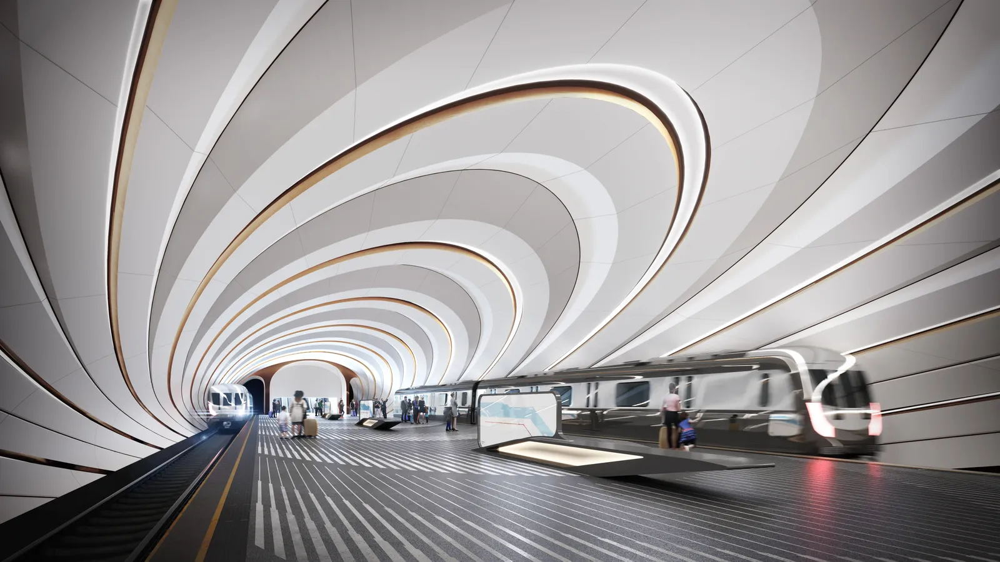
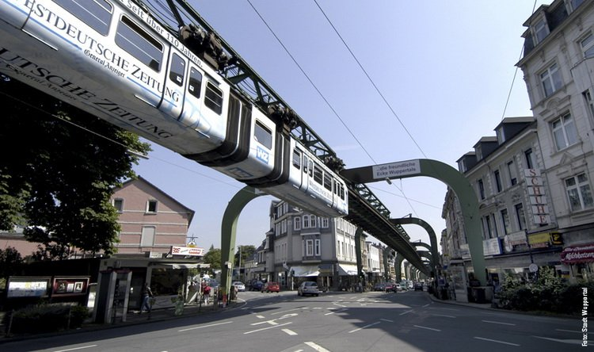

Скорее всего, многие слышали о городе Воронеж. Однако возникает вопрос, многие ли осознают насколько он развит и модернизирован? Несмотря на то, что про этот город нечасто пишут в статьях или говорят в новостях, Воронеж наполнен жизнью, бурлящей и энергичной. Но, как и во всех городах, у него есть недостаток, который в той или иной степени влияет на комфорт местных жителей. Так, например, в Воронеже плохо развита транспортная инфраструктура. С этой проблемой постоянно сталкиваются жители, которые ездят утром, вечером, и даже в обед в общественном транспорте. Автобусы не большие, а желающих много. Следовательно, автобусы и маршрутки постоянно переполнены, что влияет не только на возникновения риска заболеваемости, но и эмоциональное состояние горожан. Данный вопрос стал все больше волновать и привлекать к себе внимание местного населения. Стали поступать разные предложения об улучшение наземного транспорта нашего города. И надо отметить, что самое большое количество идей были направлены на постройку метро. Да, да, Воронеж современен, но не совершенен, у нас нет метро.
Почему же не метро?
- В Воронеже метро не просто не нужно, но и экономически вредно и нецелесообразно! – заявил председатель регионального отделения «Город и транспорт» Андрей Фурсов. – Стоимость таких работ – порядка 6,5 млрд рублей за километр линии. А весь бюджет Воронежа на следующий год, при том, что он дефицитный – около 13 млрд рублей.
По приблизительным подсчётам, на строительство километра подземки уйдёт больше половины годового бюджета! Федеральный центр такую инициативу навряд ли поддержит материально да и область тоже не горит желанием выделять лишние средства на столь дорогие проекты.
- Так же у нас нет пассажиропотока для метро, - отмечает активист. - Метрополитен хорош в строго определенных условиях - при очень больших потоках людей.
К тому же, создание метро осложняется сроками строительства. На проведение одной линии с 4-5 станциями в регионах уходит до 20 лет.
- Даже если метро построят, откуда возьмут деньги на его содержание? - рассказывает Андрей Фурсов. И в качестве примера привели Самару, где ежегодно на одно только обслуживание подземки уходит 300 млн рублей. А бюджет всего нашего воронежского транспорта на - 100 млн рублей.
Какая же тогда альтернатива?
Метробусы! Прекрасное решение для разгрузки дорог и удобства передвижения по городу. Для тех, кто не был в Стамбуле и раньше не слышал об этом виде транспорта, может посмотреть определение из википедии.
Метробус планируют пустить по наиболее оживлённым улицам Воронежа уже в 2026 году. Большинство выделенок перенесут влево. Об этом в интервью «Вести Воронеж» рассказал начальник управления транспортного планирования «РосдорНИИ» Владимир Пащенко. Однако данное решение станет толчком для возникновения новой проблемой. На мостах будут пробки, ведь мост не расширить, а одну полосу придется собрать у водителей легковых машин. То есть удобство одних приведет к дискомфорту других. Так себе, конечно, решение.
Можно ли усовершенствовать данный проект?
Еще как! Идея, которую я хочу вам представить, была разработана командой "Дилетанты" (*о нас вы больше можете узнать в разделе "Команда "Дилетанты"). На первый взгляд она может показаться абсурдной, но приведя вам наглядный пример, думаю, вы убедитесь в реализуемости данного проекта.
Вы когда-нибудь слышали о подвесном трамвае?
Это уникальный вид транспорта, единственный в своем роде. Он находится в немецком городке Вупперталь. Около века назад встал вопрос о постройке общественного транспорта, но из-за скалистой местности и грунтовых вод, не могли построить метро, а узкие улицы мешали построить трамвайные пути. Тогда ученые того времени нашли удивительное решение - подвесить трамвай. И надо заметить, что это было очень удачное решение:
- Дорога до сих пор находится в эксплуатации
- Ежедневно этой воздушной дорогой могут воспользоваться примерно 80000 человек
- Несмотря на произошедшие три неприятности, Вуппертальская подвесная дорога считается одной из самых безопасных в мире. Она прослужила целых 98 лет до первой серьезной трагедии
В чем состоит наша идея?
Проблемами, от которых мы отталкивались, являются высокая загруженность путей общественного транспорта и низкий туристический оборот, с первой мы сталкиваемся каждый день и знаем не понаслышке, а вторая актуальна в сегодняшних реалиях.
А что, если посмотреть на это под другим углом? Наша идея – разработка и внедрение уникального городского транспорта, проходящего по самым интересным для туристов местам города. Так как в нашем городе планируется реализация метробуса к 2026 году, мы желаем, сотрудничая с федеральным проектом, запустить наши автобусы по выделенным линиям. Будет разработан специальный маршрут, учитывающий места нашего города, как на левом, так и на правом его берегах. Для скоростного передвижения через водохранилище, разделяющее эти берега, будет создана беспрецедентная система, состоящая из специальных рельс и крепежных устройств, установленных на крышах автобусов.
*Подробнее о данном проекте в разделе "Motus Caeli"